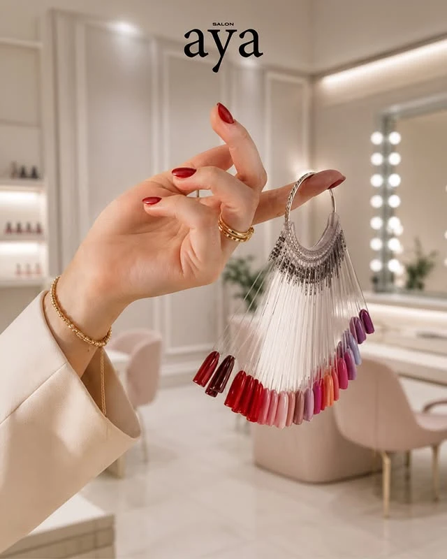

أيا
لكل يوم
لمسته الخاصة.
في أيا، تتنوع قائمة العناية بين الشعر والأظافر والمساج. اطلعي على تفاصيل الخدمات وخيارات العناية بالشعر وفروة الرأس، ثم اختاري ما يناسب وقتك واحتياجك.
تعرّف على الموقعالرياض، العليا
جلسة للأظافر، لون جديد أو وقت للعناية بالشعر. تعرّفي على خدمات أيا في العليا، ورتّبي زيارتك كما تحبين.


على ذوقك
ابدئي من القسم الذي يهمك، ثم استعرضي الخيارات.
الصور والأعمال
صور من الحساب العام وصفحة المنشأة؛ اضغط على أي صورة لعرضها كاملة.
أيا
في أيا، تتنوع قائمة العناية بين الشعر والأظافر والمساج. اطلعي على تفاصيل الخدمات وخيارات العناية بالشعر وفروة الرأس، ثم اختاري ما يناسب وقتك واحتياجك.
تعرّف على الموقعخطّط لزيارتك
اختاري ما يناسبك، ثم راجعي اختياراتك قبل الانتقال إلى الحجز.
قائمة منشورة على Fresha بتاريخ ٢١ سبتمبر ٢٠٢٦. قد تختلف الأسعار حسب الخيارات والعروض؛ السعر والموعد النهائيان على منصة الحجز.
يسعدنا اللقاء
2959 Prince Sultan Bin Abdulaziz Road, 6913, Al Mathar Ash Shamali, Riyadh, Riyadh Province
+966 53 503 0403أيا